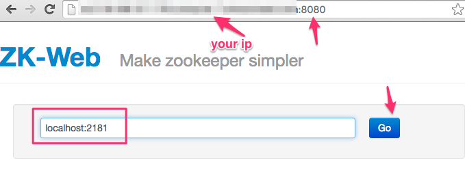

Install and run Zookeeper
None
10 mins
Try this in terminal
$ cd
$ tar xvf ~/files/zookeeper-3.4.12.tar.gz
# rename for easy referral
$ mv zookeeper-3.4.12 zookeeper
## Getting another version
# $ wget -O ~/files/zookeeper-3.4.12.tar.gz http://apache.cs.utah.edu/zookeeper/zookeeper-3.4.12/zookeeper-3.4.12.tar.gzWe have a sample config file for zookeeper. It is in config/zk/zoo.cfg. The content looks like this
tickTime=2000
dataDir=/home/ubuntu/zookeeper-data
clientPort=2181Copy this file into ‘~/zookeeper/conf’ directory as follows.
$ cp ~/config/zk/zoo.cfg ~/zookeeper/conf/zoo.cfg $ mkdir ~/zookeeper-data $ ~/zookeeper/bin/zkServer.sh startUsing JPS command
If we see a process named ‘QuorumPeerMain’ then zookeeper is running
67875 QuorumPeerMain
67732
67878 JpsOutput may look like this:
Trying 127.0.0.1...
Connected to localhost.
Escape character is '^]'.
srvr
Zookeeper version: 3.4.8--1, built on 02/06/2016 03:18 GMT
Latency min/avg/max: 0/0/0
Received: 1
Sent: 0
Connections: 1
Outstanding: 0
Zxid: 0x0
Mode: standalone
Node count: 4
Connection closed by foreign host. $ ~/zookeeper/bin/zkCli.sh -server localhost:2181This will drop you into ZKCLI. Try these commands in shell.
> help
> stat /
> quitWe can also use zk-web to examine zookeeper.
$ cd ~/apps/zk-web
$ nohup lein run &
$ cdzk-web can be accessed via port 8081.
Go to http://your_ip_address:8081 in a browser. Substitute your own machine IP.

You would see an output like this:
Good, Zookeeper is now up and running